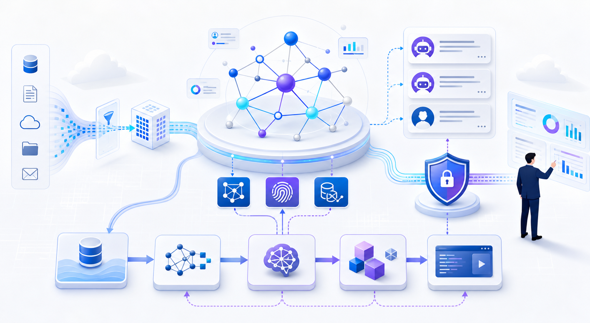
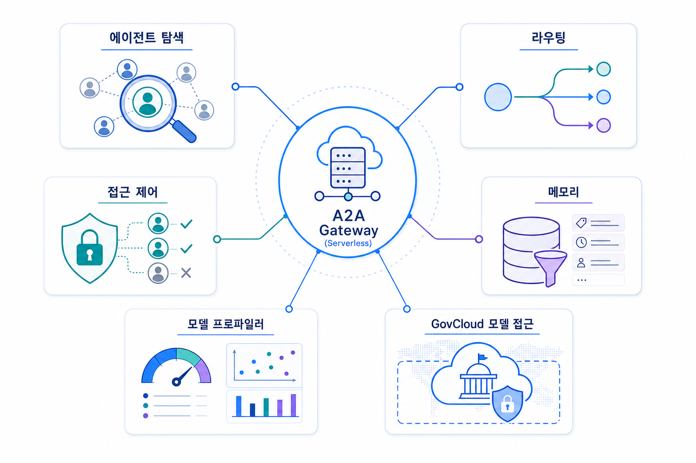
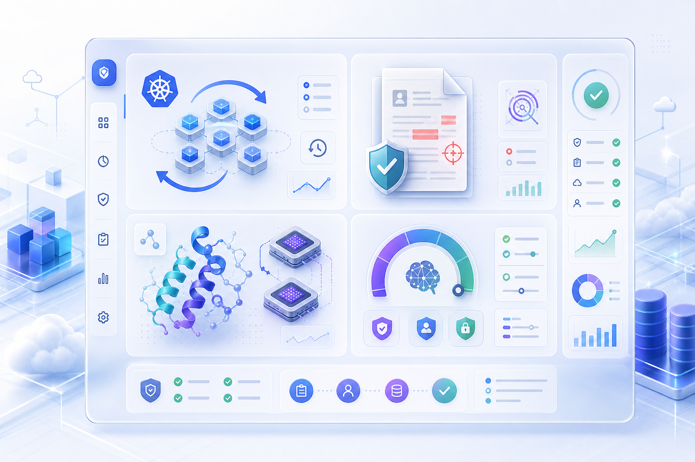

포스코DX 엔지니어링 암묵지의 인공지능 지식 자산화
엔지니어링 현장의 암묵지를 인공지능이 활용 가능한 지식 자산으로 전환하는 사례입니다.
원문 출처 보기오늘 수집된 신규 게시물 11건은 그래프 기반 검색증강생성, 에이전트 메모리, 서버리스 에이전트 게이트웨이, 모델 선택·안전 공개, 산업 특화 인공지능 워크로드가 한 흐름 안에서 강화되고 있음을 보여줍니다.

오늘의 관찰은 “더 많은 모델”보다 “더 잘 연결되고 검증되는 지식·에이전트·모델 선택 체계”에 가깝습니다.

암묵지, 그래프, 개인화 순위, 메타데이터 필터링이 함께 등장했습니다. 이는 원문 데이터의 보존뿐 아니라 관계와 접근 조건을 함께 관리해야 함을 뜻합니다.
에이전트 발견, 라우팅, 접근 제어를 독립 설계 요소로 다루는 흐름이 확인됩니다. 에이전트 간 호출이 많아질수록 게이트웨이와 감사 가능성이 중요해집니다.
모델 프로파일러, 정부 클라우드 모델 실행, 프런티어 모델 안전 공개는 모델 선택이 성능 비교만으로 끝나지 않는다는 점을 보여줍니다.
이번 수집 창에서는 애플리케이션 사례와 인프라·거버넌스 요소가 분리되어 나타나지 않았습니다. 여행상품 기획, 문서 사기 탐지, 단백질 설계 같은 업무 적용 사례와 에이전트 메모리, 모델 프로파일링, 쿠버네티스 롤백 같은 운영 안전 장치가 함께 관찰되었습니다.
| 관찰 영역 | 수집 근거 | 의미 | 확인 필요 |
|---|---|---|---|
| 지식·그래프 | 포스코DX, 하나투어, 신경생물학 영감 검색증강생성 | 문서 검색보다 관계 기반 추론과 출처 관리가 중요해집니다. | 그래프 품질 평가 기준 |
| 에이전트 아키텍처 | 에이투에이 게이트웨이, 에이전트코어 메모리 | 호출 라우팅과 메모리 접근 조건이 설계 핵심이 됩니다. | 권한 모델과 로그 보존 범위 |
| 모델 선택·안전 | 모델 프로파일러, 정부 클라우드, 프런티어 모델 안전 공개 | 성능·비용·규제·안전 검증을 동시에 비교해야 합니다. | 리전·가격·모델별 제한사항 |
| 산업 특화 워크로드 | 문서 사기 탐지, 단백질 설계 | 도메인 데이터와 검증 체계가 성과를 좌우합니다. | 실제 정확도와 책임 경계 |
원문, 요약, 그래프, 메모리, 임베딩을 같은 저장소로 섞기보다 목적별 계층을 분리해야 합니다.
에이전트가 다른 에이전트나 도구를 호출할 때 발견·라우팅·접근 제어·감사 로그를 기준으로 설계해야 합니다.
모델을 선택할 때 응답 품질뿐 아니라 비용, 지연시간, 배포 환경, 안전 검증 결과를 기록해야 합니다.
한국어 업무 지식과 조직별 암묵지가 많은 기업에서는 오늘 수집된 포스코DX·하나투어 사례가 특히 참고 대상입니다. 다만 수집 데이터만으로 각 기업의 내부 구현 세부, 비용, 성능 수치를 일반화할 수는 없으므로 확인 필요로 둡니다.

이번 데이터에서 도출되는 실행 전략은 단계형 로드맵이 아니라 의사결정자가 즉시 확인해야 할 검토 항목입니다.
적용 후보별 원문 출처, 서비스 제한사항, 리전, 가격, 보안 조건을 확인합니다.
모델·에이전트·검색증강생성의 품질 기준과 실패 기준을 사전에 정의합니다.
에이전트 호출, 메모리 조회, 모델 선택 근거를 로그로 남길 수 있는지 확인합니다.
관찰된 사실: 포스코DX 암묵지 전환, 하나투어 그래프 기반 여행상품 기획, 신경생물학 영감 검색증강생성, 에이전트코어 메모리 필터링 게시물이 같은 날 수집되었습니다.
근거 출처 URL: 출처 1 출처 2 출처 3 출처 4
기업 의사결정 시사점/리스크/기회: 기업은 단순 챗봇 도입보다 지식 출처, 그래프 관계, 메모리 필터 기준을 함께 설계해야 합니다. 기회는 업무 맥락 재사용성이며, 리스크는 부정확한 그래프·메모리 권한이 답변 품질과 개인정보 통제를 동시에 흔들 수 있다는 점입니다.
관찰된 사실: 미국 정부 클라우드의 모델 실행, 오픈소스 모델 프로파일러, 프런티어 모델 안전 공개 게시물이 함께 관찰되었습니다.
기업 의사결정 시사점/리스크/기회: 의사결정자는 “어떤 모델이 좋은가”보다 “어떤 환경에서 어떤 검증 기준으로 쓸 수 있는가”를 확인해야 합니다. 기회는 워크로드별 모델 선택 자동화이고, 리스크는 검증·감사 근거 없이 모델을 확장하는 것입니다.
관찰된 사실: 서버리스 에이투에이 게이트웨이 게시물은 에이전트 발견, 라우팅, 접근 제어를 별도 아키텍처 관심사로 다룹니다.
근거 출처 URL: 출처 1
기업 의사결정 시사점/리스크/기회: 기업은 에이전트 수가 늘어날수록 호출 경로, 권한, 감사 로그를 중앙에서 확인할 수 있는 구조를 검토해야 합니다. 기회는 에이전트 재사용성이고, 리스크는 무분별한 상호 호출과 권한 전파입니다.
관찰된 사실: 쿠버네티스 버전 롤백, 문서 사기 탐지, 단백질 설계 가속 게시물이 함께 수집되었습니다.
기업 의사결정 시사점/리스크/기회: 기업 적용 관점에서는 인공지능 실험 자체보다 안전한 배포·롤백과 도메인별 검증 데이터가 중요합니다. 기회는 특화 업무 자동화이며, 리스크는 모델 결과가 업무·과학·보안 판단에 직접 연결될 때의 검증 책임입니다.
엔지니어링 현장의 암묵지를 인공지능이 활용 가능한 지식 자산으로 전환하는 사례입니다.
원문 출처 보기여행상품 기획 업무에 그래프 기반 검색증강생성과 에이전트 구조를 결합한 사례입니다.
원문 출처 보기쿠버네티스 버전 롤백을 통해 클러스터 업그레이드 안정성을 높이는 발표입니다.
원문 출처 보기미국 정부 클라우드 환경에서 선택 가능한 모델 실행 범위가 확장된 내용입니다.
원문 출처 보기에이전트 발견, 라우팅, 접근 제어를 서버리스 게이트웨이로 구성하는 패턴입니다.
원문 출처 보기에이전트 메모리를 메타데이터 기준으로 구조화해 필터링하는 방법입니다.
원문 출처 보기그래프와 개인화 순위를 활용해 검색증강생성의 맥락 연결성을 강화하는 접근입니다.
원문 출처 보기문서 사기 탐지를 자동화하는 산업 특화 인공지능 적용 사례입니다.
원문 출처 보기오픈소스 모델 프로파일러로 모델 선택 기준을 비교·정리하는 방법입니다.
원문 출처 보기단백질 설계 워크로드를 세이지메이커 인공지능 기반으로 가속하는 사례입니다.
원문 출처 보기프런티어 모델을 고객에게 공개하기 전 안전 검증을 다루는 글입니다.
원문 출처 보기이미지 생성 프롬프트 원문은 같은 산출물 폴더의 image-prompts.md에 보존했습니다.